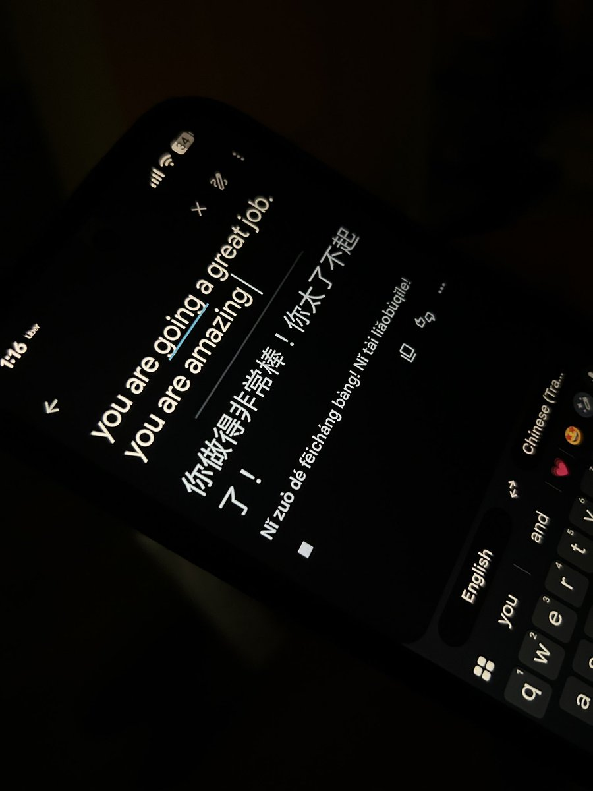

Jahseh
@godspeedyou50
姐 我这样回复你有蹭流量的意味 给我发讯息我会删掉的 就是想在评论区和你说一下 谈不上关心
年前给您批命盘时我确切指出了您今年一定要小心注意性暴力受伤事件 尤其在六月 我很担心你 抛开我在作秀的内容 就只是真的特别担心你受到伤害
少喝点酒 唉

小汪老师
@yinglongzi
在这边 有三个老外让我印象深刻 不好的印象 并且 我觉得我并不会再见他们仨 和钱没关系 第一个 是两三个月之前了 玩了我90分钟 下手很重 喜欢掐我 我一直嚎 嚎也没用 在我濒临窒息的时候 又会轻抚我 轻声说着goodgirl goodgirl 那次之后 我有一两天的心理阴影 而且他很丑也老 https://t.co/VJgQlfgrge